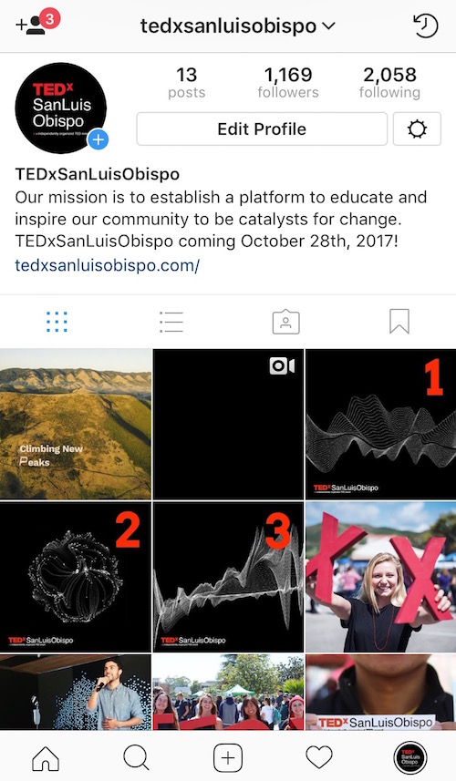

TEDxSanLuisObispo
As a coordinator for TEDxSanLuisObispo 2017, I've researched and explored various ways to effectively reach a wide range of audiences and share our conference theme, Climbing New Peaks. Climbing New Peaks represents the San Luis Obispo community's pursuit to inspire each other to become catalysts of change.
This design set was used as a countdown to our conference theme reveal and is meant to evoke an enigmatic aura.



">